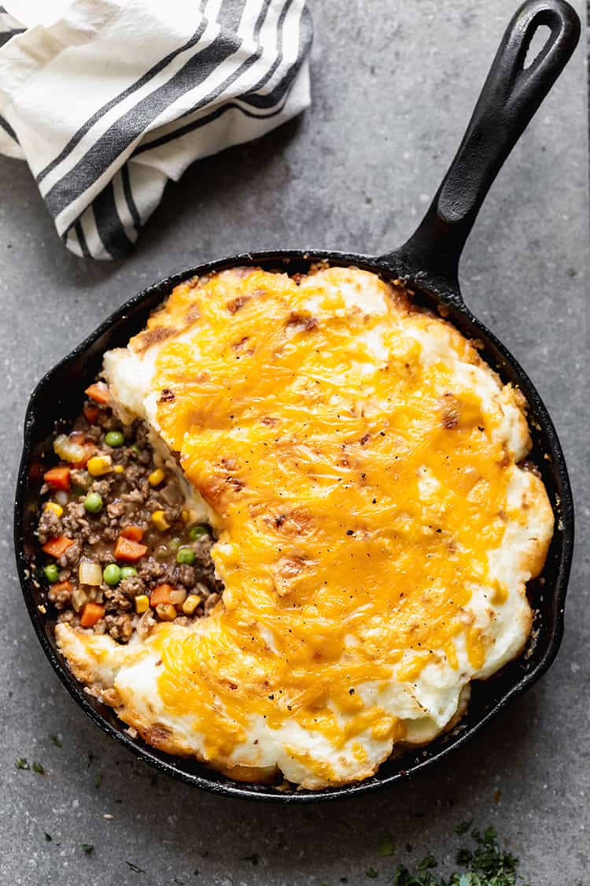

Cottage Pie Recipe

Delicious Cottage Pie for the whole family:
There is just something about old-fashioned comfort foods that warm my heart…and belly and Cottage pie is on my favorite's list
Delicious
Even my pickiest eaters enjoy this meal because the meat and gravy filling is flavorful and perfectly complimented by the mashed potatoes
Practical
I love that I can whip this up with pantry ingredients anytime, and it's one of my favorite things to use up my leftover Mashed Potatoes. It also makes an excellent freezer meal, so go ahead and double it.
Ingredients
- 1 lb lean ground beef
- 1 teaspoon salt
- 1/2 teaspoon freshly ground black pepper
- 1 small yellow onion , chopped
- 3 cloves garlic , minced
- 1/4 cup all-purpose flour
- 2 1/2 cups low-sodium beef broth
- 2 tablespoons tomato paste
- 2 tablespoons Worcestershire sauce
- 1 teaspoon fresh thyme
- 1 teaspoon fresh rosemary
- 2 bay leaves
- ½ cup frozen corn
- ½ cup frozen peas
- prebought or freshly made mashed potato
Steps
- Make your mash potatoes
- In a large, oven-safe* 30cm skillet with sides, add the ground beef (or ground lamb, to make shepherd's pie). Season with salt and pepper.
- Cook over medium heat until browned, breaking the meat into small pieces with a wooden spoon as it cooks. Drain some of the grease (reserving some in the pan) and remove meat to a plate.
- Add the onion, celery and carrots to the pan and sauté for about 5-8 minutes, until tender. Add garlic and flour and toss to combine. Cook for 1 minute
- Add the beef broth, bouillon cube, tomato paste, Worcestershire sauce, herbs, and bay leaves and stir to combine.
- Bring to a simmer and cook for 5 minutes. Taste and add extra seasonings, if needed. Remove bay leaves and stir in frozen peas, corn, and cooked meat.
- Spoon the mashed potatoes over the meat mixture to completely cover the top. Sprinkle with shredded cheddar cheese
- Bake for about 30 minutes, until golden and bubbling. Allow to cool for 15 minutes before serving, to allow the gravy sauce in the meat mixture to cool and thicken.
Home